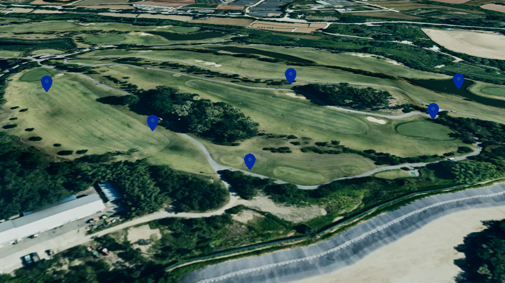

점 (Point)
목차

U3dPoint는 지정한 좌표에 이미지 마커를 표시합니다.
시설물 위치, 관측 지점, 알림 표시처럼 지도 위 한 지점을 가리킬 때 사용합니다.
마커는 항상 화면을 향하도록 그려지므로 카메라를 어느 방향으로 돌려도 정면으로 보입니다.
점은 이미지로 그려집니다.img를 지정해야 화면에 표시됩니다.
1. 점 생성하기
U3dPoint 생성자로 객체를 만들고, U3dVectorLayer.addGeometry로 레이어에 등록한 뒤 위치를 지정하면 화면에 표시됩니다.
레이어를 만들고 도형을 등록·제거하는 방법은 3D Geometry 시작하기 - 도형 등록하고 제거하기에서 설명합니다.
크기(size)는 화면 픽셀 단위입니다.
지도를 확대하거나 축소해도 화면에서 차지하는 크기가 일정하게 유지됩니다.
API
U3dPoint(opt) : 점 객체를 생성하는 생성자
매개변수
opt(object) : 점 생성 옵션opt.name(string) : 객체 이름. 지정하지 않으면 자동으로 생성됩니다opt.img(string | HTMLImageElement) : 마커 이미지 URL 또는 이미지 엘리먼트opt.size(number) : 크기(화면 픽셀). 기본값:1opt.color(ColorRepresentation) : 이미지에 곱해질 색상. 기본값:'#ff0000'opt.opacity(number) : 투명도(0~1). 기본값:0.7opt.coordinates(Array<GeoPositionVector3>) : 위치 좌표 배열 (위경도, EPSG:4326)opt.properties(KeyValue) : 사용자 정의 속성정보
1. 점 생성 예제
마커 이미지를 지정해 화면에 30픽셀 크기로 표시하는 예제입니다.color를 흰색으로 두면 이미지 색이 그대로 나타납니다.
const app = new GeOnDT.U3dAPP({containername: 'map'});
const vectorLayer = new GeOnDT.vector.U3dVectorLayer({name: 'vector'});
const point = new GeOnDT.geom.U3dPoint({
name: 'point_01',
img: 'image/marker.png', // 마커 이미지
size: 30, // 화면에서 30픽셀
color: '#ffffff'
});
vectorLayer.addGeometry(point); // 벡터 레이어에 등록
point.setPosition(126.9393, 37.5194, 40); // 위경도 좌표에 배치
이미지는 비동기로 불러오므로 로드가 끝난 뒤에 화면에 나타납니다.
2. 위치 지정하기
점 하나만 놓으려면 setPosition에 위경도와 고도를 넣습니다.
한 객체에 좌표를 여러 개 넣으면 같은 이미지의 마커가 그 개수만큼 표시됩니다.
마커 수십 개를 같은 모양으로 찍을 때 객체를 하나만 만들면 되므로 유리합니다.
좌표 전체를 한 번에 넣으려면 setPositions를, 하나씩 이어 붙이려면 addPosition을 사용합니다.
세 번째 값은 고도(m)입니다.
지형 높이를 자동으로 조회하거나 따라가지 않으므로, 지면 위에 놓으려면 그 지점의 지형 고도를 더합니다.
지형 고도는 app.getHeightAtGeographicPoint({x, y})로 조회하며, 지형 로딩이 끝난 뒤에 호출해야 실제 값을 얻습니다.
API
U3dPoint.setPosition(x, y, z) : 위경도 좌표로 위치를 지정하는 함수
매개변수
x(number | Vector3) : 경도.Vector3를 넘기면 좌표 객체 하나로 지정합니다y(number) : 위도z(number) : 고도(m)
API
U3dPoint.setPositions(coordinates) : 좌표 배열 전체를 지정하는 함수
매개변수
coordinates(Array<GeoPositionVector3>) : 위경도 좌표 배열 (EPSG:4326)
API
U3dPoint.addPosition(x, y, z) : 좌표를 하나 추가하는 함수
매개변수
x(number) : 경도y(number) : 위도z(number) : 고도(m)
API
U3dPoint.getPositions() : 지정된 위경도 좌표 배열을 반환하는 함수
반환값
return(Array<GeoPositionVector3>) : 위경도 좌표 배열 (EPSG:4326)
API
U3dPoint.getVertex() : 변환된 월드 좌표 배열을 반환하는 함수
반환값
return(Array<WorldPositionVector3>) : 좌표 배열 (월드 좌표, EPSG:3857)
1. 지면 위에 놓는 예제
마커가 지형에 묻히지 않도록 지형 고도에 여유 높이를 더해 띄웁니다.
// 지형 고도가 16m인 지점의 지면에서 5m 위에 놓습니다.
point.setPosition(126.9393, 37.5194, 16 + 5);
2. 마커 여러 개를 한 번에 찍는 예제
같은 모양의 마커를 여러 지점에 찍을 때는 객체를 하나만 만들고 좌표만 여러 개 넣습니다.
객체 수가 줄어 관리와 성능 모두 유리합니다.
point.setPositions([
new THREE.Vector3(126.9380, 37.5190, 40),
new THREE.Vector3(126.9395, 37.5200, 40),
new THREE.Vector3(126.9410, 37.5190, 40)
]);
console.log(point.getPositions().length); // 3
3. 좌표를 하나씩 추가하는 예제
사용자가 화면을 클릭할 때마다 마커를 늘려 가는 경우에 사용합니다.
point.addPosition(126.9380, 37.5190, 40);
point.addPosition(126.9400, 37.5195, 40);
3. 크기와 이미지 바꾸기
크기는 setSize로 바꿉니다.
화면 픽셀 단위이며 보통 10~60 사이를 사용합니다.
이미지는 setImage로 교체합니다.
문자열 URL을 주면 비동기로 불러오고, 이미지 엘리먼트를 주면 즉시 적용됩니다.
API
U3dPoint.setSize(size) : 크기를 설정하는 함수
매개변수
size(number) : 크기(화면 픽셀)
API
U3dPoint.getSize() : 현재 크기를 반환하는 함수
반환값
return(number) : 크기(화면 픽셀)
API
U3dPoint.setImage(img) : 마커 이미지를 설정하는 함수
매개변수
img(string | HTMLImageElement) : 이미지 URL 또는 이미지 엘리먼트
API
U3dPoint.setParam(param) : 여러 속성을 한 번에 갱신하는 함수
매개변수
param(object) : 변경할 속성 객체param.size(number) : 크기(화면 픽셀)param.img(string | HTMLImageElement) : 마커 이미지param.color(ColorRepresentation) : 색상param.opacity(number) : 투명도(0~1)
API
U3dPoint.getParam() : 현재 속성을 반환하는 함수
반환값
return(object) : 크기·이미지·색상 등 현재 속성 객체
1. 크기 변경 예제
크기는 화면 픽셀 단위라, 지도를 확대·축소해도 마커가 같은 크기로 보입니다.
중요한 지점만 크게 두어 강조할 수 있습니다.
point.setSize(48);
console.log(point.getSize()); // 48
2. 이미지 교체 예제
선택되었을 때 다른 아이콘으로 바꾸는 식으로 사용합니다.
새 이미지도 비동기로 불러오므로 로드가 끝난 뒤에 바뀝니다.
point.setImage('image/marker_selected.png');
3. 크기와 이미지를 함께 바꾸는 예제
경보 상태로 바뀔 때 아이콘과 크기를 동시에 올리는 경우입니다.
point.setParam({
size: 36,
img: 'image/marker_alert.png'
});
4. 색상과 투명도 설정하기
색상은 setColor, 투명도는 setOpacity로 바꿉니다.
지정한 색상은 이미지에 곱해집니다.
흰색 이미지를 쓰면 색상값이 그대로 나타나므로, 마커 하나로 여러 색을 표현할 수 있습니다.
setOpacity는 값이 1 미만이면 반투명 처리를 자동으로 켜고 1이면 끕니다.
API
U3dPoint.setColor(color) : 색상을 설정하는 함수
매개변수
color(ColorRepresentation) : 색상 값
API
U3dPoint.setOpacity(opacity) : 투명도를 설정하는 함수
매개변수
opacity(number) : 투명도(0~1).0이면 완전 투명,1이면 불투명
1. 색상과 투명도 변경 예제
지정한 색은 이미지에 곱해집니다.
흰색 마커를 쓰면 색상값이 그대로 나타나므로 이미지 하나로 여러 색을 표현할 수 있습니다.
point.setColor('#00b3ff');
point.setOpacity(0.6);
2. 상태에 따라 색을 바꾸는 예제
같은 흰색 마커 이미지로 상태별 색을 표현합니다.
const colors = {정상: '#2ecc71', 주의: '#f39c12', 경보: '#e74c3c'};
point.setColor(colors['경보']);
5. 속성정보와 해제
도형에는 id, 이름, 업무 데이터 같은 부가 정보를 key-value 형태로 담아 둘 수 있습니다.
새 속성을 넣을 때는 addProperties, 기존 값을 바꿀 때는 changeProperties, 전체를 통째로 교체할 때는 setProperties를 사용합니다.
더 이상 쓰지 않는 점은 dispose로 정리합니다.
API
U3dPoint.getProperties() : 사용자 정의 속성정보를 반환하는 함수
반환값
return(KeyValue) : 사용자 정의 속성정보
API
U3dPoint.setProperties(input) : 사용자 정의 속성정보 전체를 설정하는 함수
매개변수
input(KeyValue | string) : 속성 객체 또는 JSON 문자열
API
U3dPoint.addProperties(key, value) : 속성정보를 하나 추가하는 함수
매개변수
key(string) : 속성 식별키value(*) : 속성 값
API
U3dPoint.changeProperties(key, value) : 기존 속성정보의 값을 변경하는 함수
매개변수
key(string) : 변경할 속성 식별키value(*) : 속성 값
API
U3dPoint.removeProperties(key) : 속성정보를 제거하는 함수
매개변수
key(string) : 제거할 속성 식별키
API
U3dPoint.dispose() : 점과 관련 리소스를 해제하는 함수
1. 속성정보 다루기 예제
point.addProperties('시설명', '제1관측소');
point.addProperties('관리번호', 'P-0231');
point.changeProperties('시설명', '제2관측소'); // 기존 값 변경
point.removeProperties('관리번호'); // 속성 제거
console.log(point.getProperties()); // {시설명: '제2관측소'}
2. 해제 예제
레이어에서 먼저 제거한 뒤 해제합니다.
vectorLayer.removeGeometry(point);
point.dispose();